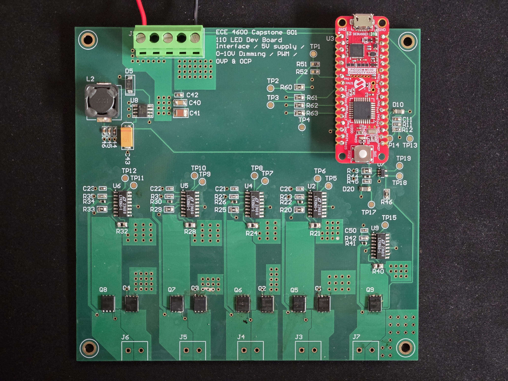
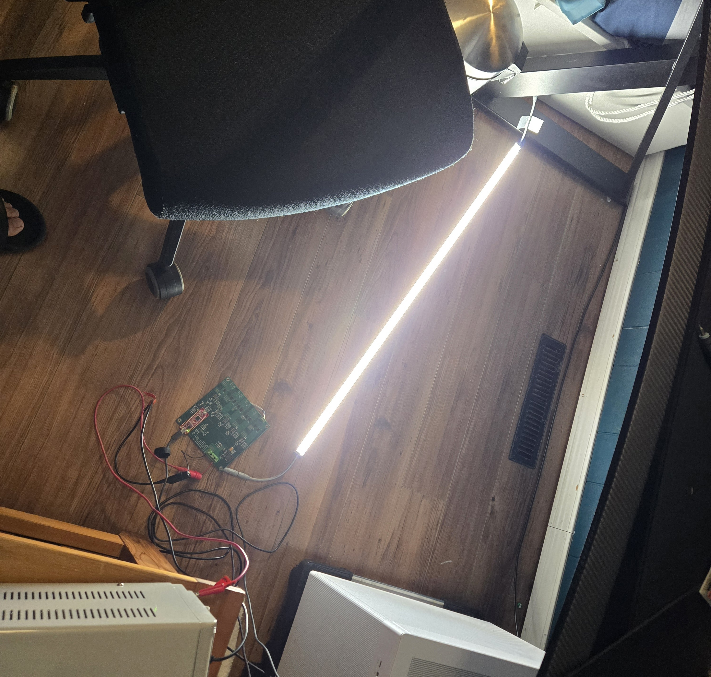
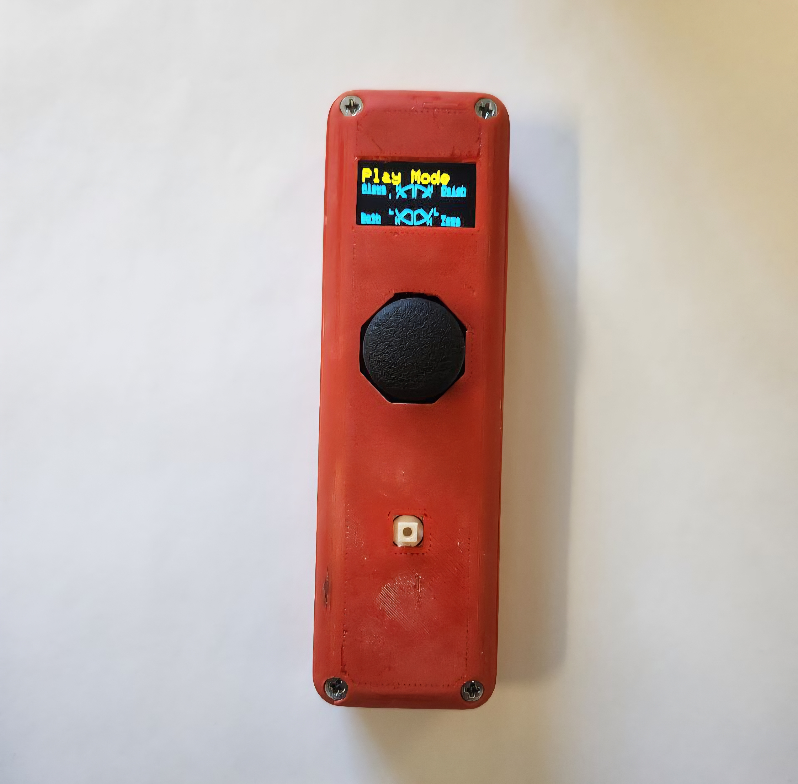

Education
Bachelor of Science in Computer Engineering
University of Manitoba — Co-op/IIP Option
Technical Skills
Languages
Java
JavaScript
TypeScript
SQL
Python
C/C++
PHP
HTML/CSS
Bash
Frameworks & Libraries
Spring Boot
Jakarta Persistence (JPA)
React
React Router
Angular
Laravel
Node.js
JUnit
TensorFlow/Keras
NumPy
pandas
Tools & Platforms
Docker
Git
GitHub
GitLab
MySQL
REST APIs
GraphQL
Shopify GraphQL Admin API
Shopify Billing API
Linux
Agile/Scrum
Work Experience
Software Engineer
En Login Inc · Remote
- Contributed to architectural decisions on a greenfield SaaS platform, shaping data models, RESTful API contracts, and frontend structure from the ground up
- Designed MySQL schemas tracking resource creation, modification, and deletion across forecasting and inventory modules. Refined schemas, API controllers, and frontend components as product requirements evolved
- Developed RESTful APIs in Java with Spring Boot and Jakarta Persistence (JPA), exposing inventory and forecast data to the frontend
- Built interactive React frontend features and integrated them with backend services, incorporating pilot user feedback to improve usability across forecasting and inventory modules
- Developed settings, per-item customizable inventory alerts, and subscription billing for a Shopify embedded app using TypeScript, React Router, Shopify's GraphQL Admin API, and the Shopify Billing API
- Conducted code reviews in team meetings to ensure code quality, consistency, and adherence to project standards
- Defined and scoped developer tasks to organize feature development and coordinate work across the team in an Agile workflow
- Authored technical documentation covering system design, data models, and API specifications to support onboarding and long-term maintainability
Engineering Intern
Parker Hannifin Corp · Winnipeg, MB
- Authored an automated Python log parser to process testing data across 2000+ units, identifying failure patterns and reducing manual testing time by 80%, and communicated insights to engineering stakeholders
- Root-caused a product-freeze defect by replicating the failure, isolating a missing pull-up resistor on the UART Rx line, and specifying a software workaround that avoided a costly board redesign
Projects
Commercial LED Driver for Price Electronics
- Designed and delivered a Class 2 LED driver for Price Electronics, converting 90–300VAC input to four 24V/100W outputs via an LLC resonant switching converter achieving 96% efficiency
- Produced schematics, PCB layout, and BOM in Altium Designer; validated hardware through bench testing with oscilloscope, power analyzer, and electronic load
- Implemented and routed an LLC resonant converter layout, optimizing component placement to minimize parasitic inductance and ensure signal integrity
- Developed embedded firmware in C for a PIC32CM microcontroller, implementing four independent PWM channels to drive a high-power LED system with precision brightness control
- Implemented ADC-based user input to dynamically control LED brightness, mapping analog readings to PWM duty cycles in real time
- Led project planning using Gantt charts, coordinated task delegation across team members, and delivered weekly progress updates to Price Electronics stakeholders


Client-Server Communication System
- Designed and implemented a TCP-based client-server system supporting concurrent connections and bidirectional communication
- Developed a multi-threaded Java client to asynchronously handle server messages, user input, and connection status
- Refactored embedded server firmware in C on a PIC32MX7 microcontroller, implementing a cooperative multitasking state machine to improve task scheduling and responsiveness
- Built an Android client with real-time visualization of networked system state and sensor data
Real-time Object Detection System
- Trained a YOLOv26s model on a custom two-class dataset for real-time inference
- Built a Python inference pipeline with OpenCV for webcam input, detecting whether a target class appears at center of frame
- Integrated serial communication with an ESP32 to trigger hardware actions based on detection
Communication System for Deaf Curlers
- Designed and developed an assistive communication system for deaf curlers enabling real-time gameplay coordination
- Implemented 2-way wireless communication using a low-power 2.4GHz protocol on ESP32
- Designed and implemented state-based control logic for the skip controller, translating user input into structured commands for real-time communication during gameplay
